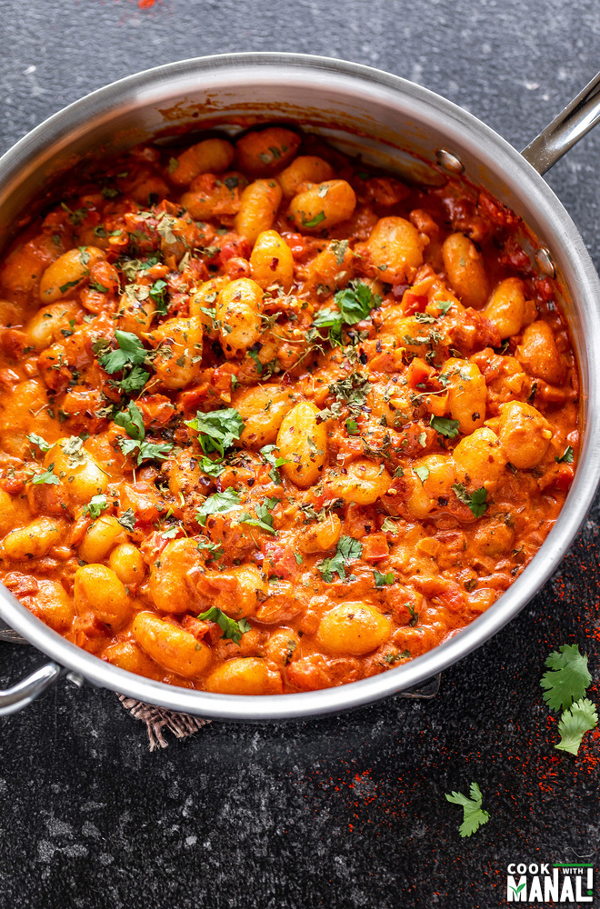

Curry Gnocchi

Description
An easy recipe that requires few ingredients, it will leave
you satisfied with plenty of time to unwind after work.
Ingredients
- 1 bag gnocchi
- 1 bottle of ready made curry sauce
- 1 onion
- 1 clove of garlic
- 1 cup chopped pumpkin/ butternut
- 1 cup spinach
Steps
- Fry the chopped up onion and garlic in a TBSP of oil.
- When golden and fragrant, add veg and gnocchi and cook on medium heat for 5 minutes.
- Add curry sauce and bring to a simmer.
- Cook until veg and gnocchi soft.